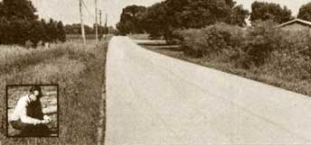

Does an innovative road builder hold the key to the building material of the future?
Take a close gander at the road pictured on this page. What do you see? Nothing but an ordinary country scene complete with trees and shrubbery, a powerline, and an average-looking (well, maybe slightly better than average) street . . . right?
Right, except for one thing. The innocent rural lane in that photo may provide some of the answers to our need for energy-efficient and ecologically sound construction. You see, that thoroughfare-Roosevelt Road in South Bend, Indiana-used to get so torn up by the harsh wear and tear of raining and freezing and thawing and freezing and thawing again that-every spring-the highway became completely impassable. School buses had to make a three-mile detour around the chuckholed road section, while patch upon patch of added asphalt cracked off ineffectively.
Yet that same road was reconstructed in 1969 ... using "soil stabilization" chemicals developed by a gentleman named Gordon L. Schneider. That was 10 years ago-and the St. Joseph County Highway Department hasn't spent a single maintenance dollar on Roosevelt Road since-but the byway still looks brand silver-dollar-shiny new!
Mr. Schneider has been building highways with his Earth Technology Systems for some 18 years, so the pictured stretch of perfect Indiana pavement is hardly a one-shot fluke. The construction chemist has been responsible for roads laid through a marshy bog in Florida, along heavily used turnpike routes in Tennessee, next to a frequently flooded national park campground in Missouri ... and in scores of other places across the United States. Every one of his projects has held up perfectly, and they've all cost less (10%, 38%, 75%-even as much as 600%-less!) than do roads made by people using the accepted building methods!
Most important, though, Gordon's highways are environmentally sound. His methods "stretch" and completely recycle old asphalt . . . so that the petrochemicals that would have gone into making each ton of the road covering can-instead-be made into 240 gallons of fuel oil! The construction procedures can also eliminate the need to import tons of "foundation" gravel . . . by solidifying the underlying soil into a base that's hard enough to withstand the entire weight of a heavily used thoroughfare. Moreover, Gordon's ecologically harmless "stabilizing" agents are derived from sulfonic acid byproducts of the oil industry . . . materials that are otherwise dumped as waste!
As you might imagine, this simple ground-and highway-hardening system could mean incredible savings for our country ... in terms of materials, labor, and that all-too-precious oil supply. In fact, a conservative estimate presented to the U.S. Department of Transportation noted that-by using soil stabilizing techniques on government roads built in 1974 alone-this country could have saved 46,012,199 barrels of crude oil . . . for an improvement in our international balance of payments of $598,158,587!
Unfortunately, the giant asphalt, cement, lime, rock, and gravel industries have-up to this point-had very little interest in saving resources . . . hence they haven't bothered to investigate Mr. Schneider's recycling methods. The present oil crunch, however, is beginning to force such businesses to take a closer look at Gordon's economical methods and impressive results.
Yet-just as the highway business "door" is finally opening-the innovative chemist is developing a new use for his soil-hardening compounds, one that could soon dwarf even the greatly beneficial effects of his road-building methods. Mr. Schneider intends to use his compounds in the construction of houses.
MOTHER's researchers are especially excited by the prospects of using Schneider's techniques to produce building materials because-a couple of years back (see "An Update on MOTHER's Research Center" in Issue 45, page 26)-we tried hard to develop soil building blocks ourselves. At that time our efforts at finding any "liquid marble" compounds were pretty inconclusive. But Gordon Schneider's amazing-and quite real-success with hardening road soils has brightened our hopes again.
And just think of the possibilities! Homes, small dams, farm buildings, fences-and more-could be built from sand, loam, clay, old newspapers, sawdust, straw ... perhaps even sewage sludge! The construction materials could be poured into forms, shaped into blocks or "particle boards" ... and become suitable for nailing, painting, and even wallpapering.
In addition, the "dirt" building matter would be ideal for earth-sheltered and passively solar-heated homes: Walls-and their surfaces-could be designed with the specific thermal mass or insulation properties needed to suit their individual locations. And the ground surrounding earth-bermed homes could be made totally waterproof ... or even shaped into forms for the house walls themselves.
And all this while-instead of further reducing our forests and other scarce resources-home builders would be using inexpensive, right-at-their-feet, ordinary soil!
Well, you'd best believe MOTHER's not letting this fish get away! We've grabbed ahold of of Gordon and are taking him out to our research center . . . so he can build everything from an all-organic road to side and back walls for a solar greenhouse.
Gordon Schneider's Earth Technology could be the key to making plain of backyard dirt into the "building material of the future". We're hoping-for all our sakes-that it will be.
EDITOR'S NOTE: Although Gordon Schneider's house building experiments are just beginning, his "turnpike techniques "are tried-and-true successes. And he's offered to help road-building-business people in MOTHER's readership learn the skills of using his moneysaving soil agents. Highway construction folk can find out more by writing to Mr. Schneider at 978 N. W. Cleveland Avenue, No. 6, Corvallis, Oregon 97330.
|
 |
|
|